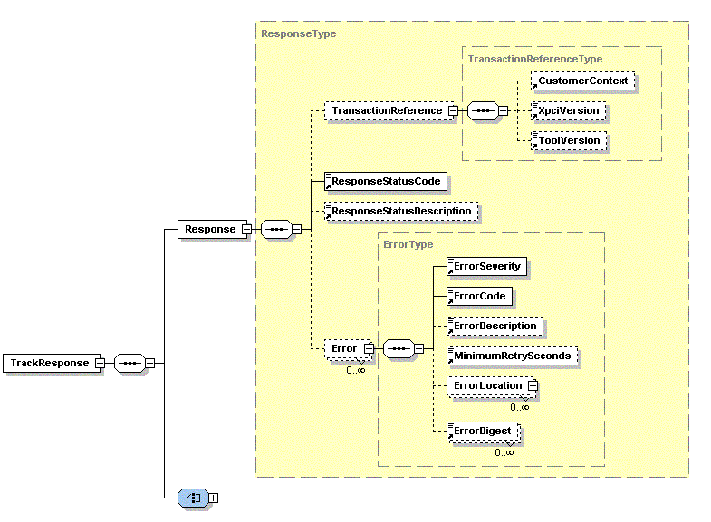
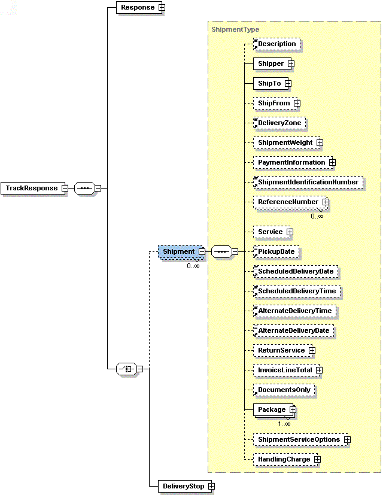
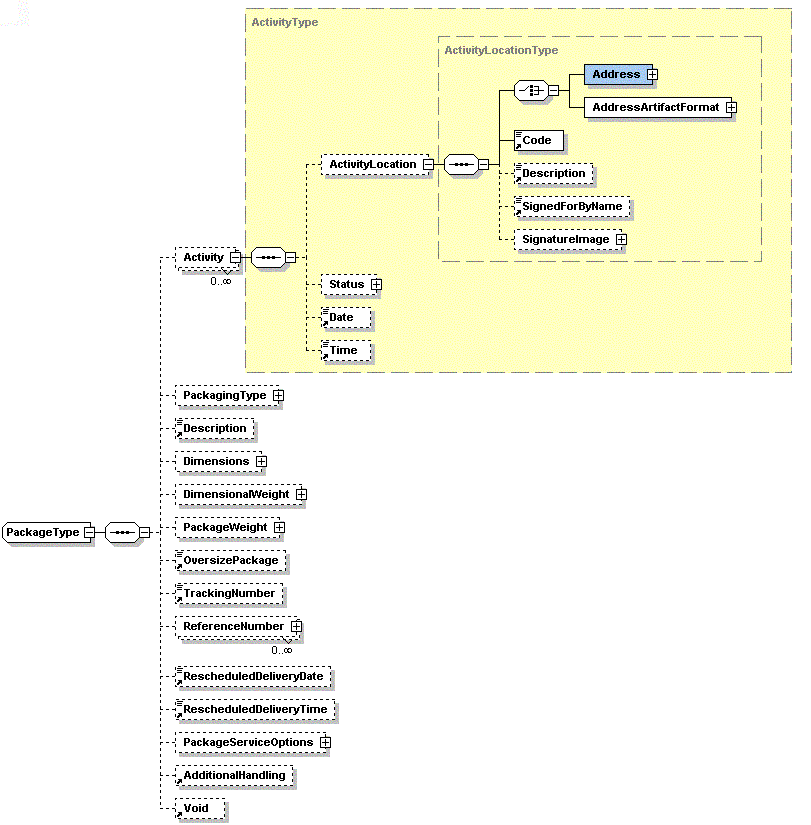

Using the UPS Shipment Tracking Control
Before you can use the UPS control, you need to register with UPS and
obtain UPS login credentials. You need to configure the UPS
Control with these credentials, as described in the section on configuring the UPS Control.
The UPS Control provides a single method to track a shipment. The only
essential parameter to this method is the tracking code, as shown below.
Invoking the control
The shipment tracking method is invoked as follows:
String trackingCode = "1Z12345E1512345676";
String transactionContext = "This will be explained later";
TrackResponseDocument result = control.trackShipment( trackingCode, transactionContext);
TrackResponse trackResponse = result.getTrackResponse();
Using the results
The TrackResponse is an XMLBean build directly from the UPS DTDs (the
DTDs were converted to XML Schema files first), so all the UPS
developer documentation concerning their DTDs is relevant to these
XMLBeans. Nevertheless, the most significant information will be
related here to get you started.
The TrackResponse XMLBean contains two significant elements. The
first is the ResponseType and it contains data on the status of the
response from the UPS server. The second significant element is
an array of ShipmentTypes, which contains the information related to
the shipment, including tracking data.
Checking the status of the response
The ResponseType is obtained as follows:
ResponseType responseType = trackResponse.getResponse();
The ResponseType represents the following XML Schema fragment:

The ResponseStatusCode will be 1 if the request was successful,
otherwise it will be 0. The CustomerContext will be the value you
provided for the parameter transactionContext when making the tracking
request. In the code snippet at the start of this page the
transactionContext was passed as "This will be explained later".
This is the explanation that was being referred to. The idea
behind returning in the response a string that was provided by the
request is to enable matching of responses with requests.
For details on the remaining items in the ResponseType, please refer to
the UPS Online
Tools Developers guide, which comes with the UPS software.
Getting the Shipment data
The second significant element in the TrackResponse is
ShipmentType. It is obtained as follows:
ShipmentType []shipmentTypes = trackResponse.getShipmentArray();
The ShipmentType represents the following XML Schema fragment:

Each ShipmentType can contain zero or more PackageType instances.
A PackageType instance contains data about a package, but also an array
of ActivityType instances. The ActivityType instances are where
the history of the package shipment are made available. The
PackageType and ActivityType are shown in more detail in this diagram.

The Java Page Flow sample that accompanies the UPS Control demonstrates
how navigate these XMLBeans in a JSP.